Renewable Forest
PAPP Facts
Resourceful by Nature
The Process
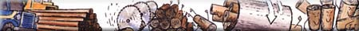
Pulp and Paper from the Renewable Forest
Prince Albert Pulp and Paper is a key part of the Saskatchewan Division of Weyerhaeuser Canada that also includes a Timberlands group, Big River Lumber and Saskatoon Chemicals.
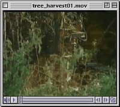 At Prince Albert Pulp and Paper, more than 800 people work to produce quality pulp and paper products for world markets. Prince Albert northern bleached kraft softwood and hardwood pulps are widely recognized for their superior strength and papermaking properties. They are the foundation ingredients for a wide range of photocopying, book publishing, computer and writing papers produced in out paper mill. |
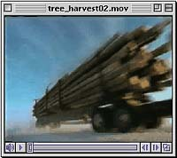 Our manufacturing activities are designed and operated with a never-ending focus on minimizing their impact on the environment. Mill effluent and air emissions are closely monitored to keep them within provincial and federal guidelines. |
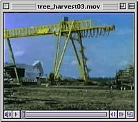 Our forest management programs are aimed at ensuring there will always be a healthy forest - for our future production as well as for wildlife habitat, and for the forestís recreational, traditional, aesthetic and environmental values. |
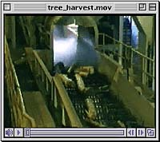 We share the public's values of the renewable forest and are committed to protecting and enhancing this treasured resource for the future. |
Prince Albert Pulp and Paper Facts
History:
- Pulp mill start-up in July 1968.
- Mill purchased in 1986 by Weyerhaeuser Canada.
- Paper mill start-up in July 1988.
- Sheeter machines added in 1990 and 1991.
- The mill site covers an area of about 1,035 hectares (2,560 acres) and employs over 800 people.
Raw Materials:
- Softwoods (55%) - Jack Pine, White and Black Spruce.
- Hardwoods (45%) - Aspen (White Poplar).
Pulp Machine:
- Production capacity of up to 1,000 air dry metric tonnes per day (325,000 ADMT/year) of bleached kraft softwood or hardwood pulp which is sold to papermakers in Canada, United States, the Pacific Rim and Europe.
Paper Machine:
- Production capacity of 650 tons per day (210,000 tons per year) of fine paper used for writing, photocopying, computer and business forms, as well as book publishing and general printing in Canada and United States.
At every stage of the pulp and paper making process, weíre
using our resources wisely and resourcefully at Prince Albert
Pulp and Paper.
Harvesting each tree harvested in Weyerhaeuserís
Forest Management License Agreement (FMLA) area is used for sawlogs or pulpwood.
Softwood and Hardwood Pulp Logs are transported to Prince
Albert Pulp and Paper where they are stored, ready to be processed
through the woodroom.
Forest Renewal within two years of harvest, tree growth is renewed in
cutover sites through natural regeneration or tree planting.
Thinning and weeding encourages healthy new forest growth.
Softwood sawlogs are transported to Weyerhaeuser's Big River Sawmill.
Weyerhaeuser Lumber goes to market.
Byproduct chips from lumber production at Big River and
five other area sawmills are transported to the pulp mill storage
piles.
In the Woodroom, logs are debarked and chipped for processing
in the digester. The bark is collected for use as boiler fuel.
Waste bark, sawdust, fuel oil and natural gas are burned in boilers,
producing about half the millís daily steam requirements.
Wood Chips are the main ingredients in the pulp making
process.
Purchased Electrical Power
Electrical Power Generation: Steam powers a turbine connected
to an electrical generator, producing a part of the millís
daily electrical power requirements.
Steam is also used in several of the millís processes.
Chemicals produced at our Saskatoon Chemicals plant are
used in the pulp bleaching stage.
Purchased Recycled Pulp is blended with our own hardwood
and softwood pulp to produce recycled paper with a 10% recycled
waste paper content.
We constantly monitor the millís air emissions to ensure
that we meet government air regulations.
Black Liquor: a mixture of spent cooking chemicals generated
in the digesting process.
Black Liquor is burned in chemical recovery boilers to
produce about half the steam required in the mill.
Chemicals are recovered from the boilers. The residual
chemicals are converted back to white liquor in a series
of chemical reactions called causticizing. Then, itís
ready for use in the digester cooking process.
The mill's fresh water supply is drawn from the North Saskatchewan
River.
Mill Effluent goes through a two-stage treatment process
before it flows back into the river as clarified effluent.
Settling Ponds: Effluent flows into one of two settling
ponds. There, solids settle out and are hauled to a landfill.
Aeration Basin: where micro-organisms feed on the effluent's
organic material and convert it to carbon dioxide and water.
Treated effluent flows through a defoaming tower and a
sampling and volume measuring station, before being discharged
back into the river through a diffuser system.
Pulp: about one-half of the hardwood and softwood pulp
produced on-site goes to our paper mill. The rest is baled and
sold on world markets.
Paper is sold in either rolls or sheets to Canadian and
American customers.
1. Logs to chips . . . the Woodroom
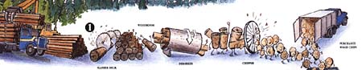
Truckloads of logs are transferred to the woodroom's slasher deck where large rotary saws cut the logs into 2.4 metre (eight foot) length. The logs are tumbled through a large rotating debarking drum and are washed on their way to the chipper. Here, rotating blades cut them into uniform-sized chips which are screened and conveyed to one of four outside storage piles. Chips delivered from area sawmills are stored in a separate pile. |
2. Chips to Fibre . . . The Digester
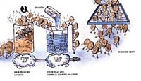 Chips are steam heated to aid chemical saturation. A chemical cooking solution is applied under pressure to impregnate the chips before they enter the digester. Here, high pressure and temperature help the cooking chemicals dissolve the wood's lignin, the natural glue holding wood fibres together. The brown fibre is separated from the spent chemical/lignin solution. The fibre is transferred to the bleach plant and the remaining solution goes into a recovery recycling process. |
3. Brown to White . . . The Bleaching Process
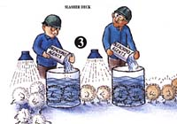 A series of chemical bleaching and washing processes converts the brown stock to a pure white pulp fibre. Approximately half of the resulting whitened pulp fibre is used at our paper mill. The rest is prepared for shipment to our other customers. |
4. Preparing Pulp for Paper Makers
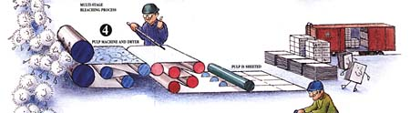
In the pulp machine, the white fibre-water mixture is poured onto a continuously rotating screen mesh where 75 to 80 per cent of its water content is removed. The water drains through the screen, leaving a moist mat of fibre. Then, the mat is pressed between rolls and is passed through a dryer to remove more moisture. About half of the pulp is cooled and cut into sheets which are bailed for shipment by rail and/or ship to our customers around the world. |
5. Papermaking . . Mixing Things up
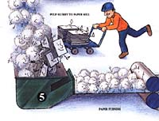 Softwood and hardwood pulps are produced in separate lots. Only one pulp type can be supplied to the paper mill in a slurry solution at any one time. The other is made up by repulping baled pulp in water. Slurries from both the pulp mill and the paper millís bale pulper are combined. Paper making chemicals and minerals are also added. A diluted mixture of the resulting paper stock, called the furnish, is then spread onto a rotating plastic mesh (the wire) on the paper machine. To manufacture recycled paper, purchased recycled pulp is blended with our own hardwood and softwood pulp at the bale pulper. |
6. Drainage . . . A Pressing Process
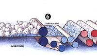 Papermaking involves removal of almost all of the water from the paper furnish. Some water drains by gravity while a vacuum pulls even more through the bottom wire. Where the top and bottom wires come together, water is forced out by a squeezing action. The paper machine also has three presses that squeeze water out of the sheet. |
7. Temperature is Rising . . . The Dryers
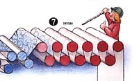 Most of the remaining moisture is evaporated in the main dryer section of steam-heated cylinders. Them, the sheet proceeds through a gate roll size press where a starch solution is applied to seal both sides of the sheet before it passes through an afterdryer section. |
8. Rolling Right Along
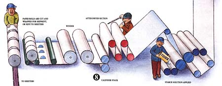
Traveling at speeds up to 40 miles per hour, the 26-foot-wide dry sheet passes through a calendar stack that controls its thickness and smoothness - and is collected on a large reel in jumbo rolls that weigh up to 40 tons. On the winder, the rolls are slit to desired widths and wound on pre-cut cores, ready to be shipped to customers or moved to one of our two sheeters. |
9. A Cut Above . . . The Sheeters
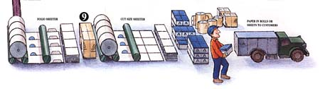
At speeds up to 72,000 sheets per minute, Weyerhaeuser's cut size sheeter is among the largest and fastest in the world with the capacity to convert 100,000 tins of paper annually into business and consumer-sized sheets (8.5x11 inch regular or three-hole punched, 8.5x14 inch and 11x17 inch). Our folio sheeter can process another 35,000 tons of paper annually - cutting the roll stock into sheet sizes ranging up to 84x62 inches for use by commercial printers. |
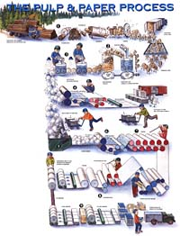 The entire process at a glance. |